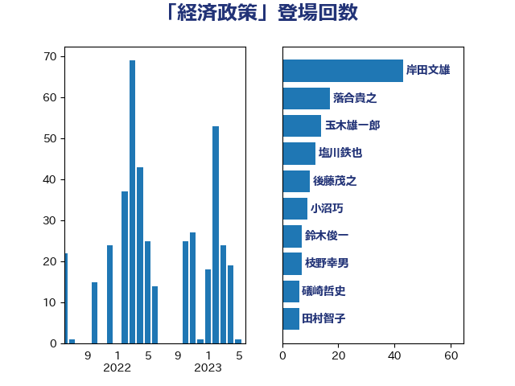

単語「経済政策」

| 岸田文雄 | 自由民主党 | 43 回 |
| 落合貴之 | 立憲民主党 | 17 回 |
| 玉木雄一郎 | 国民民主党 | 14 回 |
| 塩川鉄也 | 日本共産党 | 12 回 |
| 後藤茂之 | 自由民主党 | 10 回 |
| 小沼巧 | 立憲民主党 | 9 回 |
| 鈴木俊一 | 自由民主党 | 7 回 |
| 枝野幸男 | 立憲民主党 | 7 回 |
| 礒崎哲史 | 国民民主党 | 6 回 |
| 田村智子 | 日本共産党 | 6 回 |
| 斎藤アレックス | 国民民主党 | 6 回 |
| 音喜多駿 | 日本維新の会 | 5 回 |
| 西岡秀子 | 国民民主党 | 5 回 |
| 浅田均 | 日本維新の会 | 5 回 |
| 沢田良 | 日本維新の会 | 5 回 |
| 森本真治 | 立憲民主党 | 5 回 |
| 小林鷹之 | 自由民主党 | 5 回 |
| 足立康史 | 日本維新の会 | 4 回 |
| 浜田聡 | NHK党 | 4 回 |
| 泉健太 | 立憲民主党 | 4 回 |
| 櫛渕万里 | れいわ新選組 | 4 回 |
| 末次精一 | 立憲民主党 | 4 回 |
| 大石あきこ | れいわ新選組 | 4 回 |
| 石井苗子 | 日本維新の会 | 3 回 |
| 田村まみ | 国民民主党 | 3 回 |
| 末松義規 | 立憲民主党 | 3 回 |
| 早稲田ゆき | 立憲民主党 | 3 回 |
| 山田勝彦 | 立憲民主党 | 3 回 |
| 山本太郎 | れいわ新選組 | 3 回 |
| 三木圭恵 | 日本維新の会 | 3 回 |
| 高木宏壽 | 自由民主党 | 2 回 |
| 青柳仁士 | 日本維新の会 | 2 回 |
| 鈴木義弘 | 国民民主党 | 2 回 |
| 赤木正幸 | 日本維新の会 | 2 回 |
| 藤岡隆雄 | 立憲民主党 | 2 回 |
| 萩生田光一 | 自由民主党 | 2 回 |
| 菅義偉 | 自由民主党 | 2 回 |
| 舩後靖彦 | れいわ新選組 | 2 回 |
| 秋野公造 | 公明党 | 2 回 |
| 神田潤一 | 自由民主党 | 2 回 |
| 田嶋要 | 立憲民主党 | 2 回 |
| 浜野喜史 | 国民民主党 | 2 回 |
| 浅野哲 | 国民民主党 | 2 回 |
| 梅村聡 | 日本維新の会 | 2 回 |
| 柴愼一 | 立憲民主党 | 2 回 |
| 林芳正 | 自由民主党 | 2 回 |
| 岩渕友 | 日本共産党 | 2 回 |
| 山本博司 | 公明党 | 2 回 |
| 小野泰輔 | 日本維新の会 | 2 回 |
| 小西洋之 | 立憲民主党 | 2 回 |
| 小池晃 | 日本共産党 | 2 回 |
| 宮本徹 | 日本共産党 | 2 回 |
| 大塚耕平 | 国民民主党 | 2 回 |
| 吉田統彦 | 立憲民主党 | 2 回 |
| 吉田はるみ | 立憲民主党 | 2 回 |
| 勝部賢志 | 立憲民主党 | 2 回 |
| 佐藤啓 | 自由民主党 | 2 回 |
| 仁木博文 | 無所属 | 2 回 |
| 井原巧 | 自由民主党 | 2 回 |
| 中谷一馬 | 立憲民主党 | 2 回 |
| 上川陽子 | 自由民主党 | 2 回 |
| たがや亮 | れいわ新選組 | 2 回 |
| 齋藤健 | 自由民主党 | 1 回 |
| 麻生太郎 | 自由民主党 | 1 回 |
| 高野光二郎 | 自由民主党 | 1 回 |
| 高木啓 | 自由民主党 | 1 回 |
| 高木かおり | 日本維新の会 | 1 回 |
| 馬場伸幸 | 日本維新の会 | 1 回 |
| 青山繁晴 | 自由民主党 | 1 回 |
| 長谷川岳 | 自由民主党 | 1 回 |
| 金村龍那 | 日本維新の会 | 1 回 |
| 道下大樹 | 立憲民主党 | 1 回 |
| 角田秀穂 | 公明党 | 1 回 |
| 西村康稔 | 自由民主党 | 1 回 |
| 藤巻健太 | 日本維新の会 | 1 回 |
| 藤井比早之 | 自由民主党 | 1 回 |
| 荒井優 | 立憲民主党 | 1 回 |
| 茂木敏充 | 自由民主党 | 1 回 |
| 若林健太 | 自由民主党 | 1 回 |
| 緒方林太郎 | 無所属 | 1 回 |
| 米山隆一 | 立憲民主党 | 1 回 |
| 竹内譲 | 公明党 | 1 回 |
| 福田昭夫 | 立憲民主党 | 1 回 |
| 福島伸享 | 無所属 | 1 回 |
| 福山哲郎 | 立憲民主党 | 1 回 |
| 神谷宗幣 | 参政党 | 1 回 |
| 神津たけし | 立憲民主党 | 1 回 |
| 田村貴昭 | 日本共産党 | 1 回 |
| 田島麻衣子 | 立憲民主党 | 1 回 |
| 田中健 | 国民民主党 | 1 回 |
| 牧山ひろえ | 立憲民主党 | 1 回 |
| 片山大介 | 日本維新の会 | 1 回 |
| 片山さつき | 自由民主党 | 1 回 |
| 滝波宏文 | 自由民主党 | 1 回 |
| 渡辺周 | 立憲民主党 | 1 回 |
| 浅尾慶一郎 | 自由民主党 | 1 回 |
| 河野義博 | 公明党 | 1 回 |
| 池畑浩太朗 | 日本維新の会 | 1 回 |
| 櫻井周 | 立憲民主党 | 1 回 |
| 横沢高徳 | 立憲民主党 | 1 回 |
| 柴田巧 | 日本維新の会 | 1 回 |
| 松本剛明 | 自由民主党 | 1 回 |
| 新垣邦男 | 立憲民主党 | 1 回 |
| 岸真紀子 | 立憲民主党 | 1 回 |
| 岩谷良平 | 日本維新の会 | 1 回 |
| 岡田克也 | 立憲民主党 | 1 回 |
| 岡本三成 | 公明党 | 1 回 |
| 山際大志郎 | 自由民主党 | 1 回 |
| 山崎誠 | 立憲民主党 | 1 回 |
| 小宮山泰子 | 立憲民主党 | 1 回 |
| 小倉將信 | 自由民主党 | 1 回 |
| 天畠大輔 | れいわ新選組 | 1 回 |
| 大島敦 | 立憲民主党 | 1 回 |
| 大島九州男 | れいわ新選組 | 1 回 |
| 塩田博昭 | 公明党 | 1 回 |
| 堂込麻紀子 | 無所属 | 1 回 |
| 吉川元 | 立憲民主党 | 1 回 |
| 原口一博 | 立憲民主党 | 1 回 |
| 北神圭朗 | 無所属 | 1 回 |
| 加田裕之 | 自由民主党 | 1 回 |
| 倉林明子 | 日本共産党 | 1 回 |
| 住吉寛紀 | 日本維新の会 | 1 回 |
| 伊藤達也 | 自由民主党 | 1 回 |
| 伊藤孝恵 | 国民民主党 | 1 回 |
| 伊佐進一 | 公明党 | 1 回 |
| 井坂信彦 | 立憲民主党 | 1 回 |
| 井上哲士 | 日本共産党 | 1 回 |
| 下村博文 | 自由民主党 | 1 回 |
| 上田清司 | 国民民主党 | 1 回 |
| ながえ孝子 | 無所属 | 1 回 |